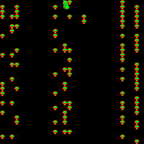
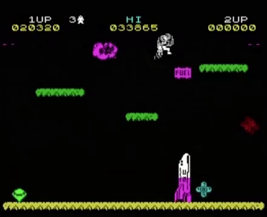

Programmer
Valencia, Spain
madalenofi@esat-alumni.com
Skills
c++
c
python
Languages
Spanish
English
Centipede is a 1980 fixed shooter arcade video game developed and published by Atari.
Jetpac is a shooter video game developed and published by Ultimate Play the Game and released for the ZX Spectrum and VIC-20 in 1983 and the BBC Micro in 1984.
Asteroids is a space-themed multidirectional shooter arcade video game designed by Lyle Rains and Ed Logg released in November 1979 by Atari, Inc.
First year of HND in Computing - ESAT (Escuela Superior de Arte y Tecnología)
Bachelor
Primary